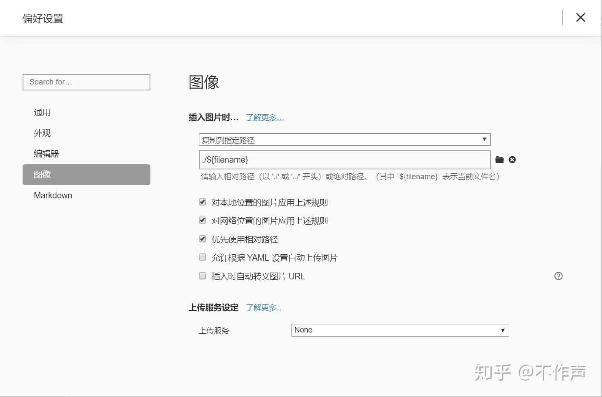
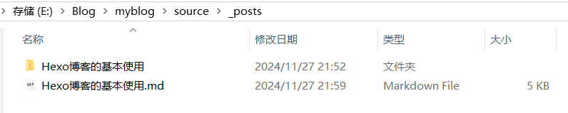
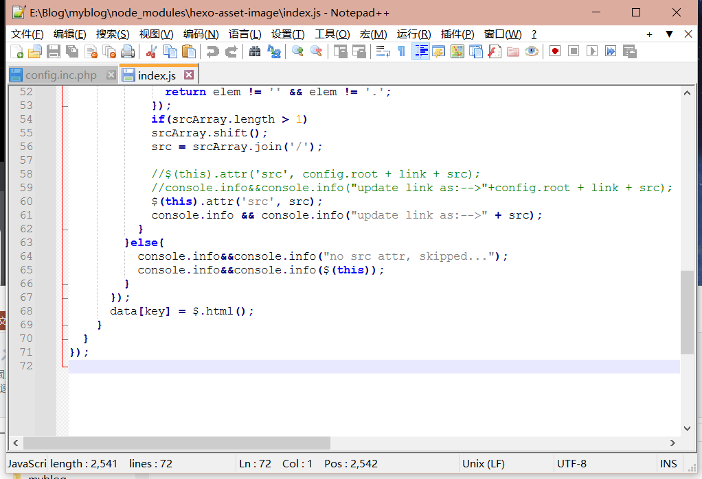

Hexo博客的基本使用
常用命令
本地日志目录下输入
1 | hexo clean #清空缓存 |
如果你安装了
hexo-admin插件,就可以通过访问localhost:4000/admin来管理你的文章了。并且在可视化界面中操作文章内容。新建的md文件前写入配置信息
1
2
3
4
5
6
7
8
9
10
11
12
13
14
15
16
17
18
19---
title: Hello-World
date: 2019-04-07 00:38:36
categories: 学习笔记 #分类
+ tags: [node.js, hexo] #标签，英文逗号
---
#或者
---
title: Hello-World
date: 2019-04-07 00:38:36
categories: 学习笔记
+ tags:
+ - node.js # 注意短线后有空格
+ - 📁Hexo
---
具体应用
创建文章
1 | hexo new page tags # 创建“标签”页面 |
删除文章
进入到source / _post 文件夹中，找到helloworld.md文件，在本地直接执行删除。然后依次执行
1 | hexo d -g |
使用Typora插入图片的方法
更改Tpyora设置，使有md文件对应的文件夹
修改hexo文件夹中的_config.yml文件，如下：
1
2
3
4
5#可以使新建文章的时候自动创建对应文章名的文件夹
post_asset_folder: true
marked:
prependRoot: true
postAsset: true在终端cd到hexo文件夹，``hexo new [layout]
`命令创建一篇新文章，此时会在hexo文件夹的source目录下，自动创建一个文件夹和.md文件。
改完配置完成之后，如图：可以看到，同时还生成了一个同名的资源文件夹。我们可以将所有与该文章有关的资源（包括图片）放在这个关联文件夹中
下载hexo-asset-image插件，命令：
npm install hexo-asset-img --save然后修改插件58、59行代码为如下代码
1
2$(this).attr('src', src);
console.info && console.info("update link as:-->" + src);

- 重新加载验证图片是否加载成功，如果有hexo-asset-img插件会产生冲突。
详细建站可以查看这个文章，本文使用部分数据
本博客所有文章除特别声明外，均采用 CC BY-NC-SA 4.0 许可协议。转载请注明来源 质明の世界！